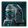
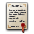

Diplomacy
{kind=link}
Diplomacy comprises the actions and agreements that empires can take with and against each other. Most diplomatic actions and agreements are mutually beneficial.
Empires with the  Pompous Purists civic can send but not receive diplomatic propositions. This includes border access, so whether an empire has borders open or close towards them is decided solely by the Initial Border Status policy. It also means that if two empires have the civic they cannot conduct diplomacy with each other. Overlords can send propositions to subjects with the civic.
Pompous Purists civic can send but not receive diplomatic propositions. This includes border access, so whether an empire has borders open or close towards them is decided solely by the Initial Border Status policy. It also means that if two empires have the civic they cannot conduct diplomacy with each other. Overlords can send propositions to subjects with the civic.
Envoys
 Envoys are minor leaders that can be assigned to perform various diplomatic tasks. Once an envoy is assigned to a task, it cannot be reassigned again for a year. Envoys can be assigned to the following tasks:
Envoys are minor leaders that can be assigned to perform various diplomatic tasks. Once an envoy is assigned to a task, it cannot be reassigned again for a year. Envoys can be assigned to the following tasks:
 Improve Relations with another empire, which grants
Improve Relations with another empire, which grants  +0.25 opinion per month to and from the target empire (up to +150) and removes the embassy requirement for certain diplomatic actions
+0.25 opinion per month to and from the target empire (up to +150) and removes the embassy requirement for certain diplomatic actions- Harm Relations with another empire, which grants −0.5 opinion per month to and from the target empire (up to −150) and removes the relation requirement for negative diplomatic actions
- First contact, which establishes communications
- Build a Spy Network, which increases
 infiltration in another empire over time and allows for operations to be conducted
infiltration in another empire over time and allows for operations to be conducted
Each Empire starts with 2 Envoys by default and can gain additional ones in the following ways:
| Available envoys | |
|---|---|
| Source | Effect |
| +3 | |
| +2 | |
| +2 | |
| +2 | |
| Cradle of Souls Accord of Trust (passive accord) | +2 |
| +2 | |
| +2 | |
| +2 | |
| Familiar Face civic | +2 |
| +2 | |
| Shared Destiny ascension perk | +2 |
| Grand Embassy Complex building | +2 |
 Orbital Embassy Complex orbital ring building |
+2 |
| Interstellar Assembly (Stage IV) | +2 |
| +1 | |
| +1 | |
| +1 | |
| +1 | |
| +1 | |
| +1 | |
| +1 | |
| +1 | |
| +1 | |
| +1 | |
| +1 | |
| Embassy Complex building | +1 |
| Sanctum of the Whisperers building | +1 |
| Cradle of Souls Gift of the Cradle empire modifier | +1 |
| +1 | |
| +1 | |
| +1 | |
| +1 | |
| +1 | |
| +1 | |
| Embodied Dynamism technology | +1 |
| Interstellar Assembly (Stage II) | +1 |
| president perk | +1 |
| +1 | |
| +1 | |
| +1 | |
| +1 | |
| Society insight technology (each) | +0.5 |
| Physics insight technology (each) | +0.25 |
| Engineering insight technology (each) | +0.25 |
| −1 | |
| −1 | |
Trust
| Trust cap source | |
|---|---|
| Base | 50 |
| Varies by agreement | 75 or 100 |
| +50 | |
| +50 with | |
| Galactic Union member (level 5) Per |
+5 |
| Trust growth modifier source | |
|---|---|
| +33% | |
| Galactic Union member (level 3) Per |
+5% |
| +10% | |
| +100% |
Empires which engage in friendly diplomacy build  trust over time. Each point of trust adds
trust over time. Each point of trust adds  +1 opinion and
+1 opinion and  +0.5 intel cap. The default
+0.5 intel cap. The default  trust cap is 50. Certain diplomatic agreements increase this cap, with only the highest amount applying. Conversely, many diplomatic agreements require a certain amount of trust or relation level to be proposed.
trust cap is 50. Certain diplomatic agreements increase this cap, with only the highest amount applying. Conversely, many diplomatic agreements require a certain amount of trust or relation level to be proposed.
Trust changes monthly based on the current diplomatic relationship between two empires. Most diplomatic agreements have a small amount of  trust growth, while
trust growth, while  rivalry and
rivalry and  war quickly decay any trust at −2 per month. If there are no active sources of trust growth, trust decays by −0.25 each month.
war quickly decay any trust at −2 per month. If there are no active sources of trust growth, trust decays by −0.25 each month.
Modifiers for  trust growth and
trust growth and  trust cap can be found in the tables to the right.
trust cap can be found in the tables to the right.
Threat
Empires that conquer or subjugate other empires generate threat. This represents other nearby empire's concerns and fears of being conquered next. Each empire has a threat rating at every other empire, and as it increases, the empire gains a stacking negative opinion modifier towards the aggressor empire, while becoming increasingly friendly with a stacking positive opinion modifier towards other empires that isn't also threatening. This makes empires with mutual threat more willing to form an alliance against an aggressive conqueror or crisis.
Threat is generated by:
- Conquest:
- 2 Conquered a system
- 4 Conquered an upgraded starbase
- 8 Conquered a colony
- ×0.75 if wargoal is Claim
- ×0.67 if wargoal is Counterattack
- 0.5
 Vassalize war victory or status quo with new empire created
Vassalize war victory or status quo with new empire created - 0.25 Make Tributary or Make Subsidiary war victory or status quo with new empire created
- 0.1
 Impose Ideology war victory or status quo with new empire created
Impose Ideology war victory or status quo with new empire created - 0.5 Take Galatron war victory
- 0.5 Bring Into Fold war victory
- 0.5
 Establish Hegemony war victory
Establish Hegemony war victory - 0.5 Impounding Assets war victory
- 0.5 Bring Into Fold war victory
- 2 Prethoryn Scourge or Contingency conquered a colony
- 2 Unbidden, Aberrant, Vehement or Synth Queen destroyed a colony
- 1000 Upgraded an Aetherophasic Engine to stage 2
- 10 Destroy a star system by Star-Eater
- 3 Use World Cracker, Global Pacifier, Neutron Sweep, Divine Enforcer, Nanobot Diffuser, Deluge Machine, Toxifier or Devolving Beam on a colony belonging to another empire
- 1 Use World Cracker or Toxifier on a non-colony planet belonging to another empire
{kind=link}
Once threat is generated, all empires gain their threat rating towards the threatening empire, with the following factors:
- Multiplied by Threat concern factor of AI personalities
- ×0 if same Federation with threatening empire
- ×0.5 if
 Non-Aggression Pact with threatening empire
Non-Aggression Pact with threatening empire - ×0.1 to ×2 from relative power to threatening empire
- ×0 to ×1, x1 - 0.01 per 1 border distance to threatening empire
- ×0.75 to ×1.25, x1 - 0.002 per 1 point of opinion towards threatening empire
Threat decays 0.25 per month, and there are no other ways to lower threat.
Favors
Favors can only be obtained through events and have two purposes. First, an empire can call upon Favors to add another empire's  Diplomatic Weight to theirs (+10% per favor) when voting on Resolutions in the Galactic Community as long as the other empire is not already voting the same way. This does not decrease the other empire's diplomatic weight for the vote. Second, Favors increase the acceptance rate of certain diplomatic agreements or federation laws by +5 for each Favor. An empire can owe another empire up to 10 Favors.
Diplomatic Weight to theirs (+10% per favor) when voting on Resolutions in the Galactic Community as long as the other empire is not already voting the same way. This does not decrease the other empire's diplomatic weight for the vote. Second, Favors increase the acceptance rate of certain diplomatic agreements or federation laws by +5 for each Favor. An empire can owe another empire up to 10 Favors.
Multiple empires can call upon Favors from the same target empire and one empire can simultaneously call upon Favors from multiple target empires.
Diplomatic actions and agreements
Diplomatic actions are divided into two types: simple actions, which happen as soon as an empire selects one, and agreements, which require the recipient to agree to it. Many actions have a 10-year cooldown between uses. Human players have 6 months to respond to a diplomatic request before it is automatically declined.
Most diplomatic agreements require a certain level of either trust or relations between the two empires. Additionally, there must be an established embassy or the proposer must have the  Diplomatic Networking tradition. Most diplomatic agreements add a minimum intel cap and provide greater details on related types of intelligence.
Diplomatic Networking tradition. Most diplomatic agreements add a minimum intel cap and provide greater details on related types of intelligence.
{kind=link}
Border access
Every empire can have its borders opened or closed towards any other empire it finished a first contact with it. If borders are open the other empire's ships can enter the empire borders. If borders are closed the other empire's ships can enter the empire borders and if the borders are being closed while the other empire's ships are within borders they will all go MIA. If borders are closed towards an empire, it will bring a −25%  Opinion penalty. The starting access after a first contact is completed depends on the Initial Border Status policy.
Opinion penalty. The starting access after a first contact is completed depends on the Initial Border Status policy.
Borders cannot be closed towards empires at  Truce with and they cannot be open towards
Truce with and they cannot be open towards  Rivals (in case of both, the
Rivals (in case of both, the  Truce takes precedence). Subjects will always have open borders to and from their overlord and fellow subjects. Certain Galactic Community resolutions also force all members to open their borders towards each other. Until first contact is completed borders are always open.
Truce takes precedence). Subjects will always have open borders to and from their overlord and fellow subjects. Certain Galactic Community resolutions also force all members to open their borders towards each other. Until first contact is completed borders are always open.
Cloaked ships can enter the borders of empires with closed borders.
Agreements
Agreements require the recipient empire to agree to it, affect both empires, and can be ended by either empire at any point. If the recipient is an AI empire the UI will show whether the agreement will be accepted or refused although the exact reasons require at least  Medium Intel on Diplomacy.
Medium Intel on Diplomacy.
Agreements are only possible between empires that are at peace with each other and neither empire declared the other a  Rival. And if an empire is a subject it can only have agreements with empires that aren't its overlord if the terms of agreement do not include Limited Diplomacy.
Rival. And if an empire is a subject it can only have agreements with empires that aren't its overlord if the terms of agreement do not include Limited Diplomacy.
{kind=link}
General diplomacy
| Agreement | Effects | Requirements |
|---|---|---|
| ||
| ||
|
||
| Harm Relations |
|
|
|
| |
| Make Claims | Switches to the Claims interface. | Proposer is allowed to make claims |
|
| |
| Insult | ||
| Adds recipient to the Imperial Council at a cost of |
| |
| Removes recipient from the Imperial Council at a cost of |
| |
| Proposer joins the |
| |
| Enters the Wargoals menu to declare a proxy war |
|
{kind=link}
{kind=link}
{kind=link}
Subject empire diplomacy
Subject empires have certain obligations to their overlord, based on their agreement terms. Subject empires can be blocked from engaging in most diplomacy by the agreement term Limited Diplomacy. Even without that agreement term, most other diplomatic actions and agreements are blocked for subjects. Subjects have  +25 opinion and
+25 opinion and  +0.25 trust growth with their overlord. Additionally, subjects have an additional diplomatic factor,
+0.25 trust growth with their overlord. Additionally, subjects have an additional diplomatic factor,  loyalty, which determines whether they will engage in trade or other diplomacy with their overlord.
loyalty, which determines whether they will engage in trade or other diplomacy with their overlord.
Diplomatic subjugation, whether demanded or asked for, requires both parties to be independent and at peace. Additionally, the potential subject cannot be the Custodian or  Galactic Emperor, nor have been declared a crisis. Awakened Empires can always propose subjugation.
Galactic Emperor, nor have been declared a crisis. Awakened Empires can always propose subjugation.
| Agreement | Effects | Requirements |
|---|---|---|
| Enters the terms menu to propose becoming overlord of recipient |
| |
| Enters the terms menu to propose becoming subject of recipient |
| |
| Grants independence to the subject and sets a 10-year Truce | Proposer is | |
| Propose Secret Fealty | Proposer gains |
|
{kind=link}
- Diplomatic actions
| Action | Effects | Requirements |
|---|---|---|
| Grants independence to the subject and sets a 10-year Truce | Proposer is | |
| Integrate Subject | Integrates the subject into the overlord empire. | |
| Cancel Integration | Stops current integration | Proposer is integrating recipient |
| Support independence |
|
|
| Cancel support independence | Ends support independence of recipient | Proposer is supporting independence of recipient |
| Pledge Secret Fealty | Recipient gains |
|
| End Secret Fealty | Ends secret fealty status with recipient | Proposer has pledged or received secret fealty with the recipient |
Federation diplomacy
Federations are multi-faceted and multi-lateral agreements between two or more empires to provide mutual defense and other benefits to the members of the federation.
Agreements between federations members or between federation members and other empires depend in part on the current laws of the federation. Federation members cannot sign  guarantee independence, support independence,
guarantee independence, support independence,  non-aggression pacts, or
non-aggression pacts, or  defensive pacts with any empire. Members can sign
defensive pacts with any empire. Members can sign  research agreements,
research agreements,  commercial pacts, and
commercial pacts, and  migration treaties with each other or other empires unless the federation's laws prevent them from doing so.
migration treaties with each other or other empires unless the federation's laws prevent them from doing so.
By default, joining a federation requires the unanimous approval of all current members of that federation, whether an empire petitions for membership or a current member invites another empire to join. With the  Federations DLC, it is possible to change that requirement to be a majority vote or be decided by the federation president alone. Joining or leaving a federation requires the federation and the potential member to be at peace. Members of the
Federations DLC, it is possible to change that requirement to be a majority vote or be decided by the federation president alone. Joining or leaving a federation requires the federation and the potential member to be at peace. Members of the  Galactic Imperium cannot join or associate with federations.
Galactic Imperium cannot join or associate with federations.
 Inward Perfection empires cannot join a federation diplomatically; they can be forced in with the
Inward Perfection empires cannot join a federation diplomatically; they can be forced in with the  Establish Hegemony casus belli or if their overlord joins a federation with the Yes Can Subjects Join law; they can be federation associates, however.
Establish Hegemony casus belli or if their overlord joins a federation with the Yes Can Subjects Join law; they can be federation associates, however.
 Federation members have
Federation members have  +50 opinion,
+50 opinion,  100 trust cap, and
100 trust cap, and  +1 trust growth with each other; they must also pay
+1 trust growth with each other; they must also pay  −1 influence in diplomatic upkeep. Federation associates have
−1 influence in diplomatic upkeep. Federation associates have  +10 opinion,
+10 opinion,  100 trust cap, and
100 trust cap, and  +0.5 trust growth with members of the associated federation.
+0.5 trust growth with members of the associated federation.
| Agreement | Effect | Federation vote | Requirements | |
|---|---|---|---|---|
| Creates federation with recipient | None |
| ||
| Invites recipient to join the Federation | By Invite Members law |
|
||
| Requests to join an already existing Federation | By Invite Members law |
| ||
|
By Kick Members law |
| ||
|
President only |
| ||
| Offer Association Status | The empire and the federation will not be able to declare war upon each other. | Unanimous |
| |
| Request Association Status | The empire and the federation will not be able to declare war upon each other. | Unanimous |
|
- Diplomatic actions
Acceptance
The acceptance of diplomatic agreements by computer empires is determined by multiple factors.
Personality
The most specific factor that determines an empire's acceptance rate is its AI personality.
Trade deals
Trade deals are instant or monthly transfers of resources or other assets between two empires. Deals that transfer monthly resources last between 10 and 30 years; once the AI fills their stockpile, long-term contracts become only viable option. It is possible to break long-term trade contracts if not enough resources are stockpiled, but this causes an  opinion penalty. Diplomatic trades often can yield better deals than the market. The AI will never accept mixed long-term/instant trades. The value the AI places on a particular resource in a deal is largely based on how much of YOUR economy is devoted to producing that resource - shifting your economy to focus on a particular resource will cause all of the AI empires to value it less in deals. Although
opinion penalty. Diplomatic trades often can yield better deals than the market. The AI will never accept mixed long-term/instant trades. The value the AI places on a particular resource in a deal is largely based on how much of YOUR economy is devoted to producing that resource - shifting your economy to focus on a particular resource will cause all of the AI empires to value it less in deals. Although  Gestalt Consciousness empires have no use for
Gestalt Consciousness empires have no use for  consumer goods or
consumer goods or  Zro, they are still willing to trade for them.
Zro, they are still willing to trade for them.
Trading requires a neutral or positive attitude between the two empires. Empires holding a negative attitude will accept only gifts (giving them resources without them giving anything in return). Fallen empires only trade if they are patronizing or enigmatic towards the proposing empire and will never trade strategic resources. Resources cannot be traded between overlords and subjects if the terms of agreement include contribution or subsidies in that resource.
Trade willingness shows how much an empire is open to trading with other empires and is dependent on their AI personality. The lower their trade willingness is, the more favorable a trade deal has to be for them to see it as fair. Empires with less than 75% trade willingness will never make offers.
In addition to resources, the following things can be traded diplomatically:
 Communications: Valued based on the number of new contacts. Does not include Enclaves. Fallen Empires always refuse.
Communications: Valued based on the number of new contacts. Does not include Enclaves. Fallen Empires always refuse.- Active Sensor Link: Valued based on distance, neighboring empires being more interested. Allows the empire receiving the link to see everything the granting empire can see. Only available as a timed deal. Fallen Empires always refuse.
- Transfer System: Available only towards neighbors during peacetime, it is the most valued trade option and can be used to offer to cede one of your star systems, usually non-preferred planets that are too expensive to terraform or adapt pops to, or as a way to ease opinion penalty of claims or border tension. The AI will always refuse to trade away their own systems, and will not accept systems that contain colonized Holy Worlds or border the Militant Isolationists.
 Join War: Enters the war on the side of the target. Pacifist empires always refuse to join wars if an attacker asks them. Fallen empires and empires too far away always refuse to join wars. If an empire proposes to join another empire's war the other empire will always accept and how valuable the trade is depends on the current warscore. Cannot be used to join wars against empires with a Non-Aggression Pact or
Join War: Enters the war on the side of the target. Pacifist empires always refuse to join wars if an attacker asks them. Fallen empires and empires too far away always refuse to join wars. If an empire proposes to join another empire's war the other empire will always accept and how valuable the trade is depends on the current warscore. Cannot be used to join wars against empires with a Non-Aggression Pact or  Truce. If accepted and the warring empires haven't established communications they will do so.
Truce. If accepted and the warring empires haven't established communications they will do so.- Allow to Leave War: Only available towards the enemy war leader and only if not war leader. If accepted the empire will leave the war. Acceptance depends on the current warscore.
 Specimens: Valued by selling cost x1.3, or twice more if they don't have a specimen from that category.
Specimens: Valued by selling cost x1.3, or twice more if they don't have a specimen from that category.- Transfer Leader: Only available to and from empires with the
 Tactical Algorithms civic or from a tier 2 specialized subject to the overlord. Valued based on the leader's abilities. Requires both empires to have the same authority if
Tactical Algorithms civic or from a tier 2 specialized subject to the overlord. Valued based on the leader's abilities. Requires both empires to have the same authority if  Gestalt Consciousness. Maximum one Leader per trade.
Gestalt Consciousness. Maximum one Leader per trade.
{kind=link}
{kind=link}
{kind=link}
Subject trade deals
Subject empires have additional trading options with their overlord:
- Borrow Fleet: Gives the subject temporary control a fleet. Valued based on how much of the total fleet power the fleets represent.

Pledge Loyalty: Only available from a subject towards the overlord as a timed trade deal; if the subject has 150 opinion or better towards the overlord, it gives  +2.5 loyalty monthly, otherwise +1.5 monthly.
+2.5 loyalty monthly, otherwise +1.5 monthly.- Share Empire Data: Adds
 +20 intel from the giver to the recipient; can be given by the overlord if they have 80 or less intel on the subject; can be given by the subject if they have 40 or less intel on the overlord.
+20 intel from the giver to the recipient; can be given by the overlord if they have 80 or less intel on the subject; can be given by the subject if they have 40 or less intel on the overlord. - Loyalty: Only available from a subject towards its overlord, each point of loyalty will increase trade acceptance by 1. Loyalty can be used even if the value would become negative, up to −100.
{kind=link}
{kind=link}
Specialist subjects have additional, unique trade options which extend their bonuses to the overlord, usually at the cost of their own:
Timed trade actions
Timed trade action provide modifiers for the overlord at the expense of negative modifiers for the subject.
Technology sharing
Technology sharing trade actions are instant trade actions that give specialist technologies as research options to the overlord.
Trade acceptance
The trade acceptance number shows how much the other empire favors a deal. A trade acceptance lower than 1 means that the other empire sees the deal as disadvantageous for them and will always refuse it. A trade acceptance of 1 means that AI empire sees the deal as fair and will always accept it. A trade acceptance higher than 1 means that the other empire sees the deal as advantageous for them and will give a temporary bonus to their  opinion, up to a limit of +100.
opinion, up to a limit of +100.
Attitude
Each empire will have a specific attitude towards other empires dictated by their AI personality, diplomatic interactions and the relative power of both empires.
| Attitude | Trade & agreements | Prefer peace | Other Effects | Requirements | Description |
|---|---|---|---|---|---|
| Neutral | none | none below | This Empire does not consider us relevant to their interests. | ||
| Wary | none | inferior relative power and shared border | This Empire maintains a cautious attitude towards us. | ||
| Receptive | more inclined to accept diplomatic pacts | diplomatic AI personalities | This Empire is interested in closer relations with us. | ||
| Cordial | more inclined to accept diplomatic pacts | high opinion | This Empire is amenable to peaceful coexistence and trading with us. | ||
| Friendly | more inclined to accept diplomatic pacts and join a federation | high opinion and successful past diplomacy | This Empire views us as a friend and may be willing to form an alliance with us. | ||
| Protective | more inclined to accept diplomatic pacts and may propose subjugation | high opinion and superior relative power | This Empire believes that we are weak and need their protection. | ||
| Suspicious | none | low opinion | This Empire views us with suspicion and mistrust. | ||
| Rival | none | rival with low opinion | This Empire views us as their rival. | ||
| Hostile | none | very low opinion | This Empire views us as their enemy. They are likely to attack us if they think they can win. | ||
| Domineering | only uses the Subjugation Casus Belli | low opinion and Subjugator AI | This Empire believes that we would make a fine vassal. | ||
| Threatened | none | 50 or higher threat rating | This Empire views us as a threatening menace. | ||
| Overlord | none | overlord | This Empire is our overlord. | ||
| Loyal | none | subject with positive loyalty | This subject is loyal to us. | ||
| Disloyal | considers the relative power of other subjects as well | subject with negative loyalty | This subject resents its subservience to us. | ||
| Dismissive | none | Fallen Empire | This Fallen Empire considers us largely beneath their notice. | ||
| Patronizing | may bestow gifts | Fallen Empire with high opinion | This Fallen Empire views us as errant children in need of their guidance. They may deign to bestow gifts of technology, resources or ships on us. | ||
| Angry | will send a demand which will grant them Casus Belli if refused | Fallen Empire with low opinion | We have angered this Fallen Empire with our actions, and they may declare war to punish us. | ||
| Arrogant | no effect | distant Awakened Empire | This Awakened Empire views us with dismissive arrogance. | ||
| Imperious | will propose subjugation | neighbor Awakened Empire | This Awakened Empire views us as a future subject. They are likely to demand we surrender our independence. | ||
| Belligerent | none | Awakened Empire with low opinion | This Awakened Empire views us as a target of conquest. They are likely to attack us. | ||
| Custodial | accepts joining a Federation | Guardian Awakened Empires | This Awakened Empire believes that it needs to protect us from the crisis currently threatening the galaxy. They are likely to attempt to ally us. | ||
| Enigmatic | opinion is hidden and has no impact | Ancient Caretakers | This Fallen Empire is an ancient artificial intelligence that behaves in a strange and unpredictable manner. We do not know what to expect from it. | ||
| Berserk | attacks any empire nearby | Malfunctioning Custodians | This Awakened Empire is an ancient artificial intelligence that has gone berserk. It is likely to attack anything and anyone around it. |
Genocidal diplomacy
Due to their destructive nature, genocidal empires only have limited access to diplomacy, depending of what type of genocidal civic they possess:
- Empires with the
 Fanatic Purifiers civic can only engage in diplomacy with empires of the same founder species. Note that these other empires still have −1000 Opinion unless they are also Fanatic Purifiers, in which case they have +200 Opinion towards each other.
Fanatic Purifiers civic can only engage in diplomacy with empires of the same founder species. Note that these other empires still have −1000 Opinion unless they are also Fanatic Purifiers, in which case they have +200 Opinion towards each other. - Empires with the
 Determined Exterminator civic can only engage in diplomacy with empires with
Determined Exterminator civic can only engage in diplomacy with empires with  Machine or
Machine or  Mechanical founder species.
Mechanical founder species. - Empires with the
 Devouring Swarm, Terravore and Devouring Wilderness civics cannot engage in any diplomacy at all, not even with identical empires. Envoys are thus only useful to them for Espionage and First Contact.
Devouring Swarm, Terravore and Devouring Wilderness civics cannot engage in any diplomacy at all, not even with identical empires. Envoys are thus only useful to them for Espionage and First Contact. - Empires with the
 Scorched World Heralds and
Scorched World Heralds and  Pyromanic Instinct civics can only engage in diplomacy with empires who have a
Pyromanic Instinct civics can only engage in diplomacy with empires who have a  Thermophile founder species.
Thermophile founder species.
All genocidal empires will refuse joining  Federations even with empires they can engage in diplomacy with to avoid possibly being forced in a
Federations even with empires they can engage in diplomacy with to avoid possibly being forced in a  Federation with an empire they can't engage in diplomacy with.
Federation with an empire they can't engage in diplomacy with.
References
| Exploration | Exploration • FTL • Unique systems • L-Cluster • Pre-FTL species • Fallen empire • Spaceborne aliens • Enclaves • Guardians • Marauders • Caravaneers |
| Celestial bodies | Celestial body • Colonization • Planetary features • Planet modifiers |
| Discovery | Discovery • Anomaly • Archaeological site • Astral rift • Relics • Collection |
| Species | Species • Pop modification • Biological traits • Machine traits • Population • Species rights • Ethics |
| Leaders | Leader • Common leader traits • Commander traits • Official traits • Scientist traits • Paragons |
| Governance | Empire • Origin • Government • Civics • Council • Policies • Edicts • Factions • Traditions • Ascension perks • Ambition • Situations |
| Economy | Resources • Planetary management • Districts • Jobs • Designation • Trade • Megastructures • Waystation |
| Buildings | Planet capital • Common buildings • Planet unique • Empire unique • Holdings |
| Ships | Ship • Arkship • Ship designer • Core components • Weapon components • Utility components • Mutations • Offensive mutations |
| Technology | Technology • Physics research • Society research • Engineering research |
| Diplomacy | Diplomacy • Relations • Galactic community • Federations • Subject empires • Intelligence • Contracts • AI personalities |
| Warfare | Warfare • Space warfare • Land warfare • Starbase • Crisis |
| Others | Events • The Shroud • Preset empires • AI players • Stat modifiers • Console commands • Easter eggs |